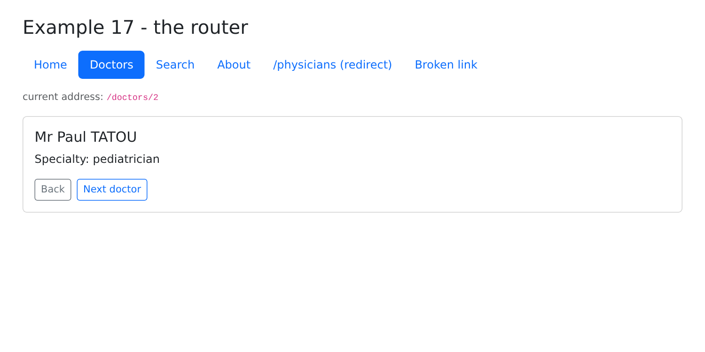
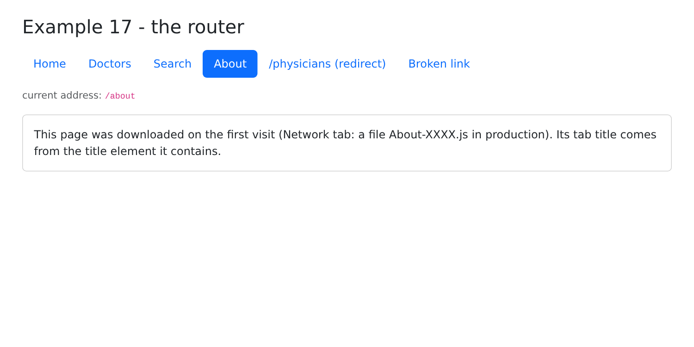
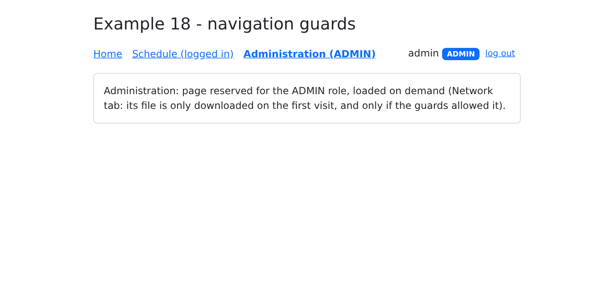

4. Roteamento
4.1. Exemplo 17: o roteador
Uma aplicação [React] é uma aplicação de página única: o navegador carrega apenas UMA página HTML. Quando você clica em um link interno, nenhuma requisição é enviada ao servidor: o roteador altera o endereço exibido pelo navegador e substitui o componente exibido. [React] não tem um roteador: usa-se, em seu lugar, a biblioteca [React Router] (pacote [react-router]), que é a mais utilizada.
[React Router] pode ser usado de três maneiras (seus “modos”): declarativo (com os componentes [<Routes>] e [<Route>], o mais simples), “data” (rotas descritas por objetos, com funções executadas antes da renderização: [loader], [middleware]...) e “framework” (uma aplicação completa com renderização no servidor, semelhante ao [Next.js]). Usamos o modo data, que oferece os controles de navegação de que precisaremos.
4.1.1. Os dados
| // dados "fixos no código", para não depender de um servidor neste exemplo
export interface Doctor {
id: number;
title: string;
firstName: string;
lastName: string;
specialty: string;
}
export const DOCTORS: Doctor[] = [
{ id: 1, title: 'Mme', firstName: 'Marie', lastName: 'PELISSIER', specialty: 'general practitioner' },
{ id: 2, title: 'Mr', firstName: 'Paul', lastName: 'TATOU', specialty: 'pediatrician' },
{ id: 3, title: 'Melle', firstName: 'Sophie', lastName: 'DUPONT', specialty: 'general practitioner' },
];
|
Dados “fixos no código”, para não depender de um servidor neste exemplo.
4.1.2. As rotas
| // =========================================================================
// 17-router/src/routes.tsx - as ROTAS da aplicação
// -------------------------------------------------------------------------
// Uma aplicação React é uma aplicação de página única (SPA: Single
// Page Application): o navegador só carrega UMA página HTML. Quando se
// clica em um link interno, nenhuma requisição é enviada ao servidor: o
// roteador muda o endereço exibido pelo navegador e substitui o
// componente exibido em <Outlet />.
//
// O React não tem roteador: usa-se a biblioteca React Router. Uma
// rota associa um CAMINHO a um COMPONENTE (uma "página"):
// 'doctors/:id' :id é um parâmetro (/doctors/2 -> id = "2");
// '*' qualquer caminho: a página "não encontrado" (o
// roteador sempre escolhe a rota mais específica).
// As rotas são ANINHADAS: a rota raiz exibe a estrutura base da
// aplicação (Shell), e suas filhas são exibidas dentro dela, no
// lugar de seu <Outlet />.
// =========================================================================
import { redirect, type RouteObject } from 'react-router';
import Shell from './Shell';
import Home from './pages/Home';
import DoctorList from './pages/DoctorList';
import DoctorDetail from './pages/DoctorDetail';
import Search from './pages/Search';
import NotFoundPage from './pages/NotFoundPage';
export const routes: RouteObject[] = [
{
path: '/',
Component: Shell,
children: [
// index: a rota do próprio endereço do pai ("/")
{ index: true, Component: Home },
{ path: 'doctors', Component: DoctorList },
{ path: 'doctors/:id', Component: DoctorDetail },
{ path: 'search', Component: Search },
// carregamento ADIADO: o código desta página só é baixado na
// primeira visita (o Vite gera um arquivo separado para ela)
{ path: 'about', lazy: async () => ({ Component: (await import('./pages/About')).default }) },
// um redirecionamento: o endereço antigo leva ao novo. Um LOADER
// é uma função que o roteador chama ANTES de exibir a rota;
// se ele lança um redirect, a navegação muda de destino
{
path: 'physicians',
loader: () => {
throw redirect('/doctors');
},
},
{ path: '*', Component: NotFoundPage },
],
},
];
|
- Linha 20: [RouteObject] é o tipo de uma rota; [redirect] cria um redirecionamento;
- linhas 28–53: as rotas são objetos: um caminho ([path]) e um componente ([Component], com inicial maiúscula — indicamos o componente, não [<Home />]);
- linhas 30–32: as rotas são aninhadas: a rota raiz exibe o “shell” da aplicação ([Shell]), e seus filhos ([children]) são exibidos DENTRO do shell, no local de seu [<Outlet />]. Os caminhos dos filhos são relativos ao do pai;
- linha 34: uma rota index: a do próprio endereço do pai (“/”);
- linha 36: [:id] é um parâmetro: [/doctors/2] exibe [DoctorDetail], em que [id] = “2”;
- linha 40: carregamento sob demanda: a função [lazy] só é chamada na primeira visita à página. [import('./pages/About')] (uma importação “dinâmica”, na forma de uma função) baixa então o módulo, que o [Vite] armazenou em um arquivo separado. [lazy] retorna as propriedades que faltam da rota: neste caso, seu componente, exportado por padrão pelo módulo;
- linhas 45–49: um redirecionamento: o endereço antigo leva ao novo. Um loader é uma função que o roteador chama ANTES de exibir a rota (para carregar seus dados); se ela dispara ([throw]) um redirecionamento, a navegação muda de destino;
- linha 50: [*] corresponde a qualquer caminho: a página “página não encontrada”. O roteador sempre escolhe a rota mais específica: a ordem das rotas não importa.
4.1.3. Inicialização
| // =========================================================================
// 17-router/src/main.tsx
// -------------------------------------------------------------------------
// createBrowserRouter(routes) constrói o roteador, que acompanha o endereço do
// navegador; <RouterProvider> exibe a rota que corresponde ao endereço
// atual. O componente raiz não é mais App: são as rotas.
// =========================================================================
import { StrictMode } from 'react';
import { createRoot } from 'react-dom/client';
import { createBrowserRouter } from 'react-router';
import { RouterProvider } from 'react-router/dom';
import 'bootstrap/dist/css/bootstrap.min.css';
import { routes } from './routes';
const router = createBrowserRouter(routes);
createRoot(document.getElementById('root')!).render(
<StrictMode>
<RouterProvider router={router} />
</StrictMode>,
);
|
- linha 16: o roteador, construído a partir das rotas. [Browser]: ele acompanha o endereço do navegador por meio da API [history];
- linha 20: o componente que exibe a rota correspondente ao endereço atual. O componente raiz não é mais [App]: são as rotas. [RouterProvider] é importado de [react-router/dom], a parte da biblioteca específica do navegador.
4.1.4. O shell da aplicação
| // =========================================================================
// 17-router/src/Shell.tsx - o "shell" da aplicação
// -------------------------------------------------------------------------
// - <Link to="...">, <NavLink to="...">: um link interno. Ele produz um
// <a href> de verdade, mas um clique não recarrega a página: é o roteador
// que age. NavLink também sabe se aponta para a página exibida: ele
// então coloca a classe "active" (a do Bootstrap);
// - <Outlet />: o espaço reservado onde a rota FILHA atual é exibida;
// - useLocation(): o endereço atual (pathname, search...).
// =========================================================================
import { NavLink, Outlet, useLocation } from 'react-router';
export default function Shell() {
const location = useLocation();
// decodeURIComponent: %20 volta a ser um espaço
const address = decodeURIComponent(location.pathname + location.search);
return (
<div className="container py-4">
<h1 className="h3 mb-3">Example 17 - the router</h1>
<nav className="nav nav-pills mb-3">
{/* end: "/" só fica ativo em "/" exatamente, e não em /doctors */}
<NavLink className="nav-link" to="/" end>Home</NavLink>
<NavLink className="nav-link" to="/doctors">Doctors</NavLink>
{/* os parâmetros depois do ?: NavLink só compara o caminho */}
<NavLink className="nav-link" to="/search?q=general practitioner">Search</NavLink>
<NavLink className="nav-link" to="/about">About</NavLink>
<NavLink className="nav-link" to="/physicians">/physicians (redirect)</NavLink>
<NavLink className="nav-link" to="/unknown-page">Broken link</NavLink>
</nav>
<p className="small text-muted">current address: <code>{address}</code></p>
<div className="card p-3">
<Outlet />
</div>
</div>
);
}
|
- linha 15: [useLocation()] retorna o endereço atual: [pathname] (o caminho), [search] (a parte após o “?”)... O componente é chamado a cada navegação do usuário;
- Linha 24: [<NavLink to="...">] é um link interno. Ele gera um [<a href>] válido (que pode ser aberto em uma nova aba), mas clicar nele não recarrega a página: o roteador cuida disso. [NavLink] também sabe se ele se refere à página exibida no momento: nesse caso, adiciona a classe [active] (a mesma do [Bootstrap]). [end]: a página inicial “/” só fica ativa exatamente em “/”, e não em [/doctors]; [<Link>] é a versão simples, sem classe ativa;
- linha 27: um endereço com parâmetros. [NavLink] compara apenas o caminho: o link permanece ativo independentemente da busca;
- linha 34: o local onde a rota FILHA atual é exibida.
4.1.5. As páginas
A página inicial:
| // React 19: um elemento <title> escrito em um componente é colocado pelo React
// no <head> da página; ele muda o título da aba enquanto o
// componente estiver exibido
export default function Home() {
return (
<>
<title>Home</title>
<p className="mb-0">
Welcome. Click on the links: the address of the browser changes, the page is never reloaded (open
the Network tab of the developer tools to check it). The Back and Forward buttons of the browser
work, as well as the reloading (F5) of any page.
</p>
</>
);
}
|
- linha 7: [React] coloca qualquer elemento escrito em um componente no [<head>] da página, enquanto o componente estiver exibido: cada página define assim o título da aba (o mesmo vale para [<meta>] e [<link>]).
A lista de médicos, com links parametrizados:
| // 17-router/src/pages/DoctorList.tsx - links com parâmetro
import { Link } from 'react-router';
import { DOCTORS } from '../data';
export default function DoctorList() {
return (
<>
<title>Doctors</title>
<ul className="mb-0">
{DOCTORS.map((m) => (
// uma template string monta o endereço /doctors/2
<li key={m.id}>
<Link to={`/doctors/${m.id}`}>{m.title} {m.firstName} {m.lastName}</Link>
</li>
))}
</ul>
</>
);
}
|
Um template string gera o endereço [/doctors/2].
O perfil de um médico:
| // =========================================================================
// 17-router/src/pages/DoctorDetail.tsx - uma página com parâmetro
// -------------------------------------------------------------------------
// useParams(): os parâmetros do caminho, aqui { id: "2" } - sempre
// STRINGS. useNavigate(): uma função para navegar POR CÓDIGO;
// navigate(-1) volta à página anterior, como o botão Voltar.
// Ao ir de /doctors/1 para /doctors/2, o React REAPROVEITA o mesmo
// componente: ele é simplesmente chamado de novo com outro id.
// =========================================================================
import { useNavigate, useParams } from 'react-router';
import { DOCTORS } from '../data';
export default function DoctorDetail() {
const { id } = useParams();
const navigate = useNavigate();
const doctor = DOCTORS.find((m) => m.id === Number(id));
if (!doctor) {
return <p className="text-danger mb-0">Doctor no. {id} does not exist.</p>;
}
const next = (doctor.id % DOCTORS.length) + 1;
return (
<>
<title>{`${doctor.firstName} ${doctor.lastName}`}</title>
<h2 className="h5">{doctor.title} {doctor.firstName} {doctor.lastName}</h2>
<p>Specialty: {doctor.specialty}</p>
<div className="d-flex gap-2">
<button className="btn btn-sm btn-outline-secondary" onClick={() => navigate(-1)}>Back</button>
<button className="btn btn-sm btn-outline-primary" onClick={() => navigate(`/doctors/${next}`)}>Next doctor</button>
</div>
</>
);
}
|
- Linha 15: [useParams()] fornece os parâmetros do caminho — neste caso, [{ id: "2" }] — sempre no formato string;
- linha 16: uma função para navegar por código;
- linhas 19–21: um médico desconhecido ([/doctors/9]): uma mensagem;
- linha 26: um título calculado: [<title>] aceita apenas UMA string, daí o template;
- linha 30: [navigate(-1)] volta à página anterior, como o botão Voltar do navegador;
- linha 31: navega para um endereço. Passar de [/doctors/1] para [/doctors/2] não recria o componente: [React] simplesmente o reexecuta, com um [id]diferente.
A busca:
| // =========================================================================
// 17-router/src/pages/Search.tsx - uma página guiada pela URL
// -------------------------------------------------------------------------
// /search?q=pediatrician: como no formulário GET do curso de NestJS, a
// página é inteiramente descrita por seu endereço: pode ser guardada nos favoritos,
// recarregada, acessada de novo ao voltar. useSearchParams() fornece os
// parâmetros depois do ?.
// <Form> (do React Router) é um formulário GET... sem recarregar: o
// roteador navega para /search?q=<input>. A página exibe o que a
// URL diz, e nada além disso.
// =========================================================================
import { Form, useSearchParams } from 'react-router';
import { DOCTORS } from '../data';
export default function Search() {
const [params] = useSearchParams();
const q = params.get('q') ?? ''; // null se ele estiver ausente
const results = DOCTORS.filter((m) => `${m.firstName} ${m.lastName} ${m.specialty}`.toLowerCase().includes(q.toLowerCase()));
return (
<>
<title>Search</title>
<Form className="d-flex gap-2 mb-3" action="/search">
{/* um campo NÃO controlado, que começa com o valor da URL;
key={q}: se a URL mudar (botão Voltar), o React recria o
campo, que então assume o novo valor da URL */}
<input key={q} name="q" className="form-control" placeholder="name or specialty" defaultValue={q} />
<button className="btn btn-primary">Search</button>
</Form>
<ul className="mb-0">
{results.map((m) => (
<li key={m.id}>{m.firstName} {m.lastName} ({m.specialty})</li>
))}
{results.length === 0 && <li className="text-muted">No result.</li>}
</ul>
</>
);
}
|
- Linha 17: os parâmetros após o “?”, na forma de um objeto [URLSearchParams]: [params.get('q')] é igual a [null] se [q] estiver ausente. [useSearchParams] também retorna (como segundo elemento) uma função para alterá-los;
- linha 24: [<Form>] (do [React Router]) é um formulário GET... sem recarregar a página: no envio, o roteador navega para [/search?q=<input>] (sendo [q] o [name] do campo). Como no formulário GET do curso de [NestJS], a página é totalmente descrita por seu endereço: é possível adicioná-la aos favoritos, recarregá-la ou voltar;
- Linha 28: o campo não é controlado; ele começa com o valor da URL ([defaultValue]). Se a URL mudar sem que a página seja recarregada (com o botão Voltar), o campo manteria o texto anterior; [key={q}] resolve esse problema. Quando a chave de um elemento muda, [React] o trata como um elemento DIFERENTE: destrói o antigo e cria um novo, que começa com o novo valor padrão. É um truque comum para “reinicializar” um componente.
A página sob demanda e a página “página não encontrada”:
| // 17-router/src/pages/About.tsx - uma página carregada sob demanda
// "export default": a rota a encontra por (await import(...)).default
export default function About() {
return (
<>
<title>About</title>
<p className="mb-0">
This page was downloaded on the first visit (Network tab: a file About-XXXX.js in production).
Its tab title comes from the title element it contains.
</p>
</>
);
}
|
| import { useLocation } from 'react-router';
export default function NotFoundPage() {
const { pathname } = useLocation();
return (
<>
<title>Page not found</title>
<p className="text-danger mb-0">No page at the address <code>{pathname}</code>.</p>
</>
);
}
|
4.1.6. Execução
Clique em “Doctors” e depois em “Mr Paul TATOU”: o endereço muda para [/doctors/2], e o título da aba passa a ser “Paul TATOU”:

Uma busca: o endereço passa a ser [/search?q=pediatrician]:

“About”: em desenvolvimento, o módulo [About.tsx] é baixado apenas na primeira visita (aba Rede das ferramentas de desenvolvimento); em produção ([npm run build 17-router]), ele fica em um arquivo separado:
| 17-router/dist/index.html 0.38 kB │ gzip: 0.26 kB
17-router/dist/assets/index-CqLr8KVv.css 230.06 kB │ gzip: 30.68 kB
17-router/dist/assets/About-DBg63tlb.js 0.36 kB │ gzip: 0.26 kB
17-router/dist/assets/index-evhjxpxc.js 317.05 kB │ gzip: 100.09 kB
|

“/physicians” leva a [/doctors]; um link quebrado:

Você pode recarregar (F5) qualquer página: o servidor de desenvolvimento do [Vite] retorna [index.html] para qualquer endereço desconhecido, e o roteador exibe a página correta. Em produção, o servidor precisará fazer o mesmo (veja o capítulo “Implantação”).
4.2. Exemplo 18: controles de navegação
Algumas páginas exigem que o usuário esteja autenticado ou tenha um papel específico. O roteador pode verificar isso antes de exibi-las, usando middleware.
4.2.1. A sessão
| // =========================================================================
// 18-guards/src/session.ts - uma sessão SIMULADA (sem servidor)
// -------------------------------------------------------------------------
// O usuário logado precisa ser conhecido pelos COMPONENTES (a barra superior,
// a página da agenda) e pelos GUARDS (funções do roteador, que
// não são componentes e portanto não podem ler um contexto). Ele é guardado
// em um módulo simples, um "store" feito à mão:
// - uma variável privada, o estado;
// - funções para lê-lo e modificá-lo;
// - subscribe: a lista das funções a notificar quando ele muda.
// Um componente se inscreve nele com useSyncExternalStore (cf. useSession): ele
// é chamado de novo quando o estado muda. O exemplo 20 confiará esse trabalho a uma
// biblioteca, o Zustand. (O exemplo 23 fará a mesma coisa com um servidor
// de verdade.)
// =========================================================================
import { useSyncExternalStore } from 'react';
export type Role = 'ADMIN' | 'DOCTOR' | 'USER';
export interface User {
login: string;
role: Role;
}
// três contas "fixas no código" (senha = login)
const ACCOUNTS: Record<string, Role> = { admin: 'ADMIN', pelissier: 'DOCTOR', martin: 'USER' };
let user: User | null = null; // o estado
const subscribers = new Set<() => void>();
function setUser(u: User | null) {
user = u;
subscribers.forEach((notify) => notify());
}
export const session = {
user: () => user,
logIn(login: string, password: string): boolean {
const role = Object.hasOwn(ACCOUNTS, login) ? ACCOUNTS[login] : undefined;
if (role === undefined || password !== login) {
return false;
}
setUser({ login, role });
return true;
},
logOut: () => setUser(null),
subscribe(notify: () => void) {
subscribers.add(notify);
return () => subscribers.delete(notify); // para cancelar a inscrição
},
};
// o hook dos componentes: o usuário logado, sempre atualizado
export function useSession(): User | null {
return useSyncExternalStore(session.subscribe, session.user);
}
|
O usuário autenticado deve ser conhecido pelos componentes (a barra superior, a página da agenda) e pelos guards— funções do roteador que não são componentes e, portanto, não podem ler um contexto. Ele é armazenado em um módulo simples, escrito à mão, um store ([store]):
- linhas 29–30: o estado, uma variável privada do módulo, e a lista de funções a notificar quando ele muda;
- linhas 32–35: alteram o estado e notificam os assinantes;
- linhas 37–52: as funções públicas: ler o usuário, fazer login (três contas fixas no código, senha = login), fazer logout e assinar ([subscribe] retorna a função que cancela a assinatura);
- linhas 55–57: o hook do componente. [useSyncExternalStore(subscribe, read)] é o hook do [React] criado para essa finalidade: ele inscreve o componente no store e o chama novamente quando o valor lido muda.
O Exemplo 20 delegará essa tarefa a uma biblioteca.
4.2.2. Os guards
| // =========================================================================
// 18-guards/src/guards.ts - GUARDS de navegação
// -------------------------------------------------------------------------
// Um MIDDLEWARE do React Router é uma função que o roteador chama
// ANTES de exibir uma rota que o declara (middleware: [...]), a CADA
// navegação para ela. Ele pode:
// - não fazer nada: a navegação continua;
// - lançar um redirect, redirect('/address'): a
// navegação é substituída por uma navegação para esse endereço.
// Ele recebe a requisição de navegação (request.url: o endereço solicitado).
//
// É o equivalente, no lado do cliente, dos guards do NestJS (JwtAuthGuard,
// RolesGuard) - com uma diferença FUNDAMENTAL: um guard do cliente é
// apenas uma comodidade. O código do cliente está nas mãos do usuário, que
// pode modificá-lo à vontade. A proteção real dos dados continua sendo a
// do SERVIDOR (cf. capítulo sobre a caixa-preta).
// =========================================================================
import { redirect, type MiddlewareFunction } from 'react-router';
import { session, type Role } from './session';
// o endereço solicitado, sem o host: "/schedule?x=1"
function address(request: Request): string {
const url = new URL(request.url);
return url.pathname + url.search;
}
// a página exige estar logado
export const requireLogin: MiddlewareFunction = ({ request }) => {
if (session.user() === null) {
// não logado: vai para a página de login, lembrando para onde queríamos ir
throw redirect(`/login?redirect=${encodeURIComponent(address(request))}`);
}
};
// a página exige um dos papéis informados: uma função que CONSTRÓI o guard
export function requireRole(...roles: Role[]): MiddlewareFunction {
return ({ request }) => {
const u = session.user();
if (u === null || !roles.includes(u.role)) {
// logado, mas sem o papel adequado: volta ao início, com um motivo
throw redirect(`/?denied=${encodeURIComponent(address(request))}`);
}
};
}
|
Um middleware do [React Router] é uma função que o roteador chama ANTES de exibir uma rota que o declara, a CADA navegação para ela. Ele pode não fazer nada (a navegação continua) ou disparar um redirecionamento, que substitui a navegação.
- Linhas 23–26: ele recebe a requisição de navegação: [request.url] é o endereço completo solicitado ([http://localhost:5173/schedule?x=1]); apenas o caminho e os parâmetros são mantidos;
- linhas 29–34: não autenticado: redireciona para a página de login, mantendo o destino pretendido ([?redirect=...]);
- linhas 37–45: uma função que CONSTRÓI o guard para os papéis indicados; [...roles]: qualquer número de argumentos, agrupados em um array. Autenticado, mas sem o papel correto: redireciona para a página inicial, com um motivo.
Este é o equivalente, no lado do cliente, dos guards do [NestJS] ([JwtAuthGuard], [RolesGuard]), com uma diferença: um guard no lado do cliente é apenas uma conveniência. O código do cliente está nas mãos do usuário, que pode modificá-lo à vontade. A verdadeira proteção dos dados continua sendo a fornecida pelo SERVIDOR (veja o capítulo sobre a caixa-preta).
4.2.3. Rotas protegidas
| // =========================================================================
// 18-guards/src/routes.tsx - rotas PROTEGIDAS
// -------------------------------------------------------------------------
// middleware: os guards a atravessar, em ordem. Uma página carregada sob
// demanda (lazy) só é baixada depois que os guards são superados.
// =========================================================================
import { redirect, type RouteObject } from 'react-router';
import Shell from './Shell';
import Home from './pages/Home';
import Login from './pages/Login';
import Schedule from './pages/Schedule';
import { requireLogin, requireRole } from './guards';
export const routes: RouteObject[] = [
{
path: '/',
Component: Shell,
children: [
{ index: true, Component: Home },
{ path: 'login', Component: Login },
{ path: 'schedule', Component: Schedule, middleware: [requireLogin] },
{
path: 'administration',
middleware: [requireLogin, requireRole('ADMIN')],
lazy: async () => ({ Component: (await import('./pages/Administration')).default }),
},
// qualquer outro endereço: volta ao início
{ path: '*', loader: () => redirect('/') },
],
},
];
|
- linha 22: as proteções da rota, executadas em ordem;
- linhas 24–26: uma página carregada sob demanda só é baixada depois que os guards são superados;
- linha 29: qualquer outro endereço: volta para a página inicial. Um loader também pode RETORNAR o redirecionamento.
O código de inicialização é o mesmo do Exemplo 17:
| import { StrictMode } from 'react';
import { createRoot } from 'react-dom/client';
import { createBrowserRouter } from 'react-router';
import { RouterProvider } from 'react-router/dom';
import 'bootstrap/dist/css/bootstrap.min.css';
import { routes } from './routes';
const router = createBrowserRouter(routes);
createRoot(document.getElementById('root')!).render(
<StrictMode>
<RouterProvider router={router} />
</StrictMode>,
);
|
4.2.4. O shell e as páginas
| // 18-guards/src/Shell.tsx - os links e o usuário logado
import { NavLink, Outlet, useNavigate } from 'react-router';
import { session, useSession } from './session';
// NavLink aceita uma FUNÇÃO para className: ela recebe { isActive }
const cssClass = ({ isActive }: { isActive: boolean }) => (isActive ? 'fw-bold' : '');
export default function Shell() {
const user = useSession();
const navigate = useNavigate();
function onLogOut() {
session.logOut();
navigate('/');
}
return (
<div className="container py-4" style={{ maxWidth: 720 }}>
<h1 className="h3 mb-3">Example 18 - navigation guards</h1>
<nav className="d-flex gap-3 align-items-center mb-3">
<NavLink to="/" end className={cssClass}>Home</NavLink>
<NavLink to="/schedule" className={cssClass}>Schedule (logged in)</NavLink>
<NavLink to="/administration" className={cssClass}>Administration (ADMIN)</NavLink>
<span className="ms-auto">
{user ? (
<>
{user.login} <span className="badge text-bg-primary">{user.role}</span>
<button className="btn btn-sm btn-link" onClick={onLogOut}>log out</button>
</>
) : (
<NavLink to="/login">log in</NavLink>
)}
</span>
</nav>
<div className="card p-3"><Outlet /></div>
</div>
);
}
|
- Linha 6: [className] de um [NavLink] pode ser uma função que recebe [{ isActive }] como entrada e retorna as classes;
- Linha 9: o usuário autenticado; a barra acompanha suas alterações;
- Linhas 12–15: logout e retorno à página inicial.
| import { useSearchParams } from 'react-router';
export default function Home() {
// ?denied=...: colocado pelo guard requireRole quando o papel não é adequado
const denied = useSearchParams()[0].get('denied');
return (
<>
{denied && <p className="alert alert-danger">Your role does not allow you to open {denied}.</p>}
<p className="mb-0">
Public page. Try the two other links, logged in or not (admin, pelissier, martin - password = login).
</p>
</>
);
}
|
| import { useSession } from '../session';
export default function Schedule() {
const user = useSession();
return (
<p className="mb-0">
The schedule of <strong>{user?.login}</strong>: this page requires being logged in.
</p>
);
}
|
| export default function Administration() {
return (
<p className="mb-0">
Administration: page reserved for the ADMIN role, loaded on demand (Network tab: its file is only downloaded
on the first visit, and only if the guards allowed it).
</p>
);
}
|
| // =========================================================================
// 18-guards/src/pages/Login.tsx
// -------------------------------------------------------------------------
// Depois do login, o usuário é enviado de volta à página que queria
// abrir (parâmetro ?redirect=... colocado pelo guard), ou ao início.
// =========================================================================
import { useState, type FormEvent } from 'react';
import { useNavigate, useSearchParams } from 'react-router';
import { session } from '../session';
export default function Login() {
const redirection = useSearchParams()[0].get('redirect');
const navigate = useNavigate();
const [login, setLogin] = useState('');
const [password, setPassword] = useState('');
const [error, setError] = useState(false);
function submit(e: FormEvent<HTMLFormElement>) {
e.preventDefault();
if (!session.logIn(login.trim(), password)) {
setError(true);
return;
}
// só um caminho INTERNO é aceito: ele começa com /, mas não com //
// (//site.com/... designa OUTRO site) - nenhum redirecionamento para outro site
const internal = redirection !== null && redirection.startsWith('/') && !redirection.startsWith('//');
navigate(internal ? redirection : '/');
}
return (
<>
{redirection && <p className="alert alert-warning">Log in to open {redirection}.</p>}
<form className="d-flex flex-wrap gap-2" onSubmit={submit}>
<input className="form-control w-auto" placeholder="login" autoComplete="username" value={login}
onChange={(e) => setLogin(e.target.value)} />
<input type="password" className="form-control w-auto" placeholder="password" autoComplete="current-password"
value={password} onChange={(e) => setPassword(e.target.value)} />
<button className="btn btn-primary">Log in</button>
</form>
{error && <p className="text-danger mt-2 mb-0">Incorrect login or password.</p>}
</>
);
}
|
- Linha 13: o endereço que queríamos abrir, repassado pelo guard;
- linhas 27–28: após o login, vamos para lá... desde que seja um caminho INTERNO (começa com “/”, mas não com “//”, que remete a outro site): uma URL de login armadilhada ([/login?redirect=https://malicious-site.com]) não deve levar para fora da aplicação.
4.2.5. Execução
Sem estar autenticado, clique em “Administration”: o guard redireciona para a página de login:

Faça login como [martin] (papel [USER]): a verificação do papel redireciona para a página inicial:

Autenticado como [admin]:
